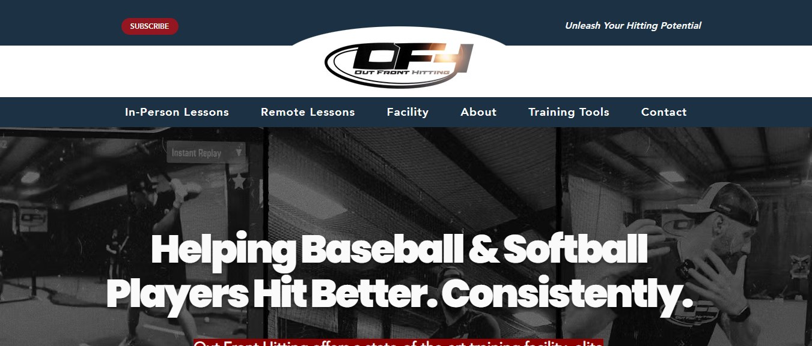

Demo preview for Out Front Hitting: this is a picture of your homepage with a working AI assistant added.Try it: click the hitter under Subscribe to chat or talk.

Private demo page. Not the live outfronthitting.com site, and links in the picture don't work. Prepared by Jason Bourbeau.